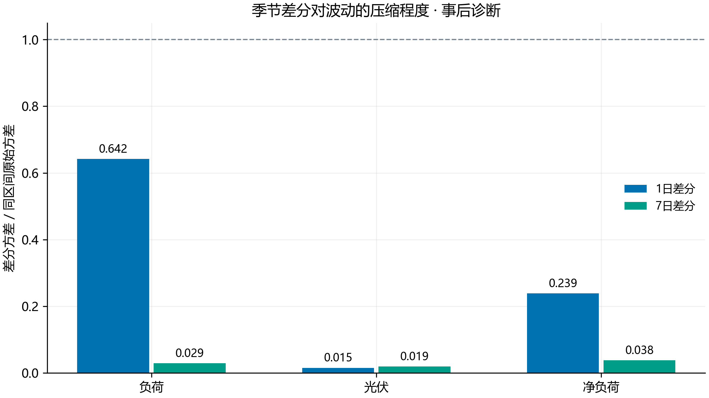
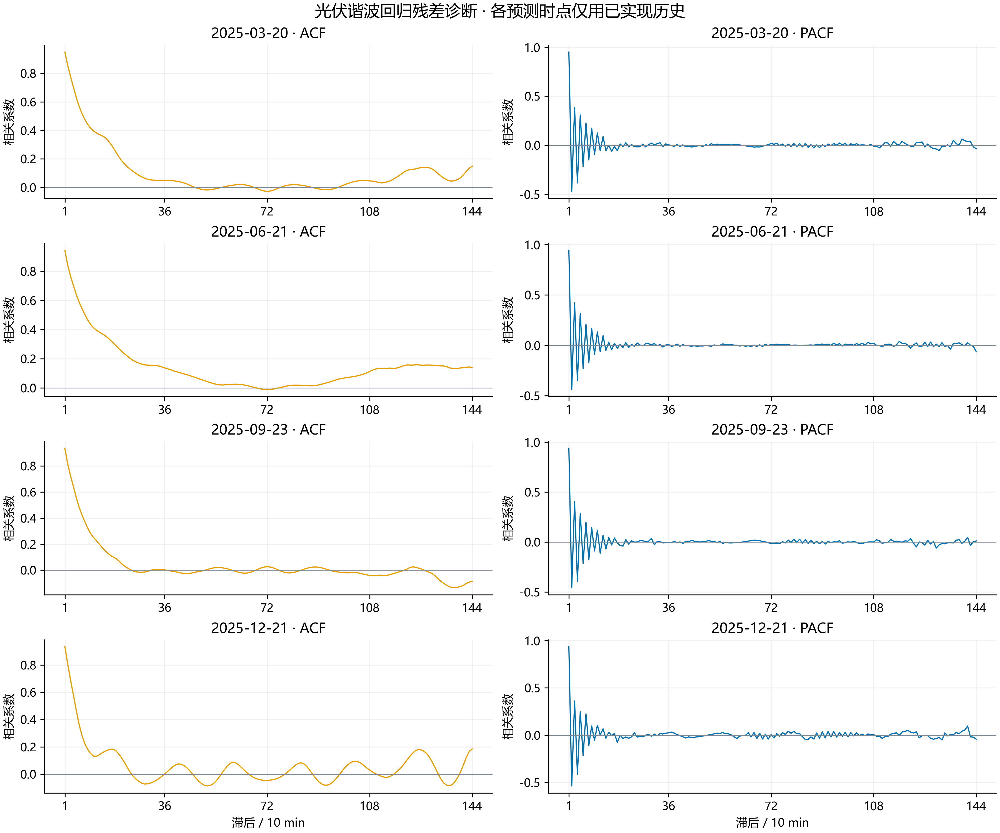
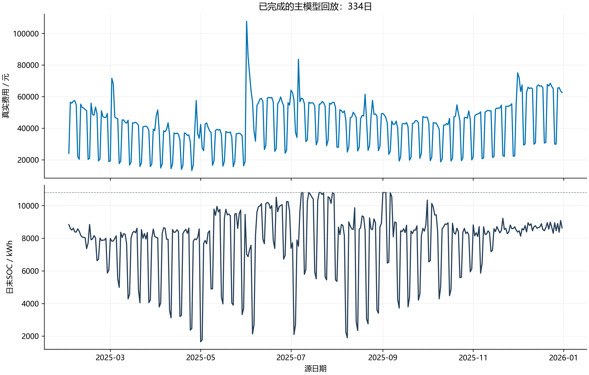

第二问 · 最终方案执行与验收
主回放完整；其他验收见下表
真实回放334 / 334 日
必需实验0 / 0
计算受限日10
执行依据为用户指定的新论文终版与代码任务书。预测缓存及在线选模保持不变；场景总数保持原设置，并按历史累计净负荷低估压力分为约80%主体层与20%尾部层。当天144段动态SOC安全裕度采用历史误差未来累计压力的80%分位，0:00冻结，代理日为0。1月储能不主动调度，2月1日SOC固定为6000kWh。
用户授权精度修订：后续单次优化gap门槛为3%，此前各精度阶段已完成的结果按原策略和末SOC保留。各实验切换日期及旧执行设置单独记录；不是从第一天采用新停止规则的重跑，亦不代表全年电费或预测误差为3%。物理约束、场景及稳定性门槛不变。修订与选择依据
精确反馈策略的可行上界与自由响应LP全局下界共同证明误差门槛；LP自由响应从不执行。必要时继续求解原生indicator MILP。三段SOC扩展也用真实半开区间回放核验，不能用完美信息Oracle替代同信息策略比较。
已完成区间：2025-02-01—2025-12-31。该区间真实费用 14,196,337.66 元，紧急购电 130,262.43 kWh；紧急购电同时充电的时段数为 0。
必需实验的真实状态
预测、场景与真实回放

seasonal_variance · SVG
dhr_residuals · SVG
real_rollout · SVG保留的数据结构诊断
原始光伏高相关主要反映昼夜形状，不能直接当作随机幅度可预测性的证明。星期分组不强加光伏星期驱动；频谱不用于反向选择早期模型阶数。季节差分的方差压缩见上方新图。